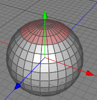
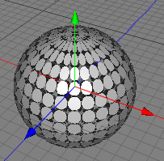

Disconnect Tool
In Cheetah3D all polygon meshes which are created through parametric or creator objects are connected. This means that the polygons share points with its neighboring polygons. This has the advantage that the geometry won't break up if you just move around single polygons or polygon selections, but it is often necessary to separate some polygons from a mesh. This task can be either done with the disconnect or with the split tool. The difference between the disconnect tool and the split tool is that the split tool creates a completely new polygon object from the polygon selection. If you use the disconnect tool instead, just the selected polygons will be disconnected from their neighbors.

Moving up the polygon selection after performing the disconnect tool.
Tip: If you select all polygons and perform the disconnect tool without preserving the groups, you could then use the subdivision tool to produce some interesting effects.

Modes
The disconnect tool can only be applied to raw polygon objects. It's only available in polygon mode.

To use the disconnect tool, select some polygons of a raw polygon object. Then call the menu command "Tools PolygonDisconnect". Now set the properties of the disconnect tool in the tool properties view. After pressing the apply button the disconnect tool will be finally performed.
PolygonDisconnect". Now set the properties of the disconnect tool in the tool properties view. After pressing the apply button the disconnect tool will be finally performed.
Keys
- none
Properties
- Preserve group: If turned off, every selected polygon will be disconnected from its neighbors. If turned on, the polygon selection will be only disconnected from it's unselected neighbors.
- Apply: performs the disconnect operation.